Digital Note Taking — How To Remember Everything
A learner reference guide for the CODE and PARA frameworks by Tiago Forte. CODE is how you get information into your second brain; PARA is how you organise it. Together they turn information overload into a system you can actually act on.
30-min session 2 frameworks: CODE + PARA Works on iPhone & Android Includes step-by-step screenshots
Method originator: Tiago Forte
Productivity expert and bestselling author. Tiago developed the CODE method and the PARA method as a complete system for capturing, organising, distilling and expressing information in a digital world.
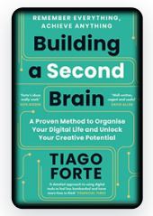
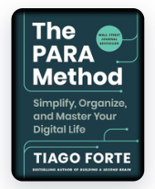
Why don’t we remember?
Modern life floods us with information — bills, ideas, articles, meetings, recipes, errands. Our brains were never built to store all of it. The answer is to stop trying. Capture it externally, organise it for action, distill it for clarity, and express it as outcomes. That’s a Second Brain.
What’s inside this guide
The CODE Method — how to get information
The PARA Method — how to organise information
- PARA Overview
- P — Projects
- A — Areas of Responsibility
- R — Resources
- A — Archive
- Differentiating PARA
Putting it into practice
The CODE Method
Capture → Organise → Distill → Express — the four moves to remember everything
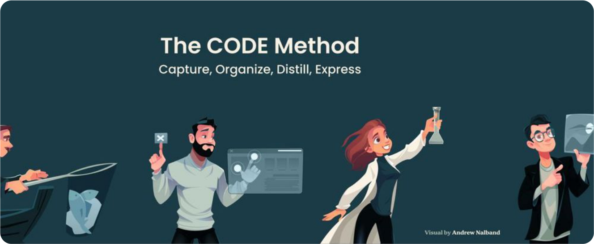
The CODE Method is Tiago Forte’s four-step framework for processing information into knowledge you can use. Each letter is a stage; the steps run in order; together they form the workflow of a Second Brain.
- C — Capture: dump information into a note app the moment you see it.
- O — Organise: file it using PARA so it’s actionable, not buried.
- D — Distill: highlight the gist so future-you can scan it in seconds.
- E — Express: turn knowledge into output — share it, ship it, act on it.
C — Capture
Use a note app to dump your information there — before you lose it
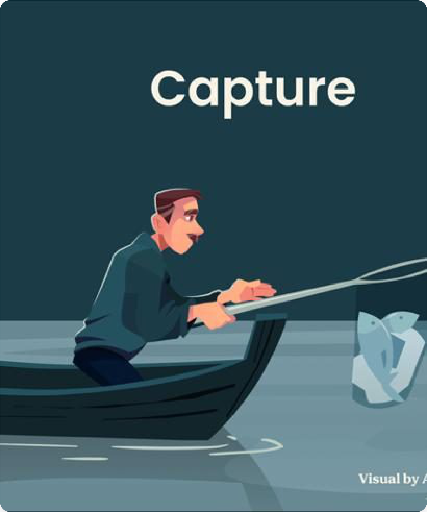
Anything worth a second thought is worth capturing
Your phone is always with you, so make your note app the place where everything lands first. Don’t try to decide where it belongs yet — just capture it. You’ll organise it later.
Examples of information worth capturing
- 10 ways how to live past 100 years old
- Bill payment due: $4,000
- Make your husband / wife fall in love with you again
- Meeting with boss next week at 10 AM on Sunday
- Repair vacuum because my dog peed on my vacuum
Examples of note apps you can use
Pick one app and stick with it. The best one is the one you’ll actually open.
- Apple Notes
- Samsung Notes
- Google Keep
- Microsoft OneNote
- Notion
O — Organise
Make your captured information actionable using the PARA method
Why organise at all?
To make things actionable. Captured information that isn’t organised is just clutter — like a desktop full of unsorted files. The PARA method gives every note a home so future-you can find it and use it.
Before vs After
This is what unorganised capture looks like — versus what four simple PARA folders look like:
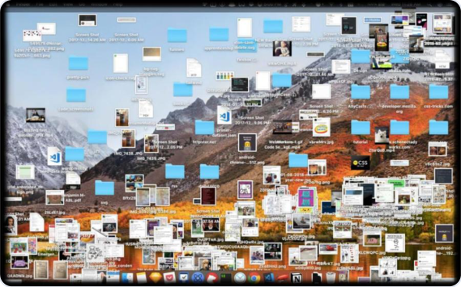
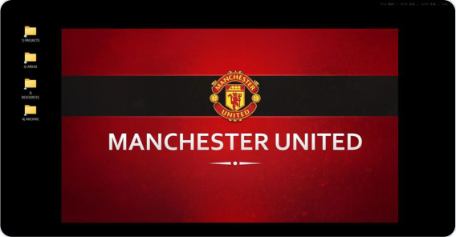
What is P-A-R-A?
Four folders. Sorted by how actionable the contents are.
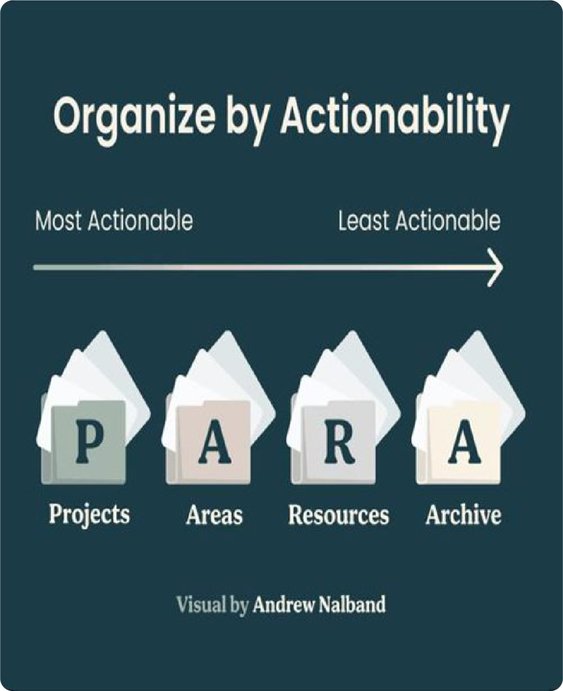
Organise by actionability
PARA stands for Projects, Areas, Resources, Archive. The order matters: it goes from most actionable on the left (Projects you’re working on this week) to least actionable on the right (Archive — stuff you’re done with).
Every note you capture goes into exactly one of these four folders. That’s it. No sub-categories, no complex tagging — just four buckets.
P — Projects
Short-term efforts you’re working on now
What goes here?
Short-term efforts in your work or life with a clear finish line.
✓ Actionable ✓ Has a due date
Examples of projects:
- Complete webpage design by today
- Buy a new computer next Sunday
- Write research report by end of the week
- Renovate the bathroom by end of June
- Finish Spanish language course in 3 months
- Set up new living room furniture before Hari Raya
- Repair vacuum by tomorrow
A — Areas of Responsibility
Long-term responsibilities you manage over time
What goes here?
Ongoing responsibilities that don’t have a finish line, but that you need to maintain at a certain standard.
✓ Actionable ✕ No due date ✓ Private to you ✓ Often recurring
Examples of areas of responsibility:
- Work: Marketing, Human Resources, Product Management, Research & Development, Direct Reports, Engineering
- Personal: Health, Finances, Kids, Writing, Car, Home Maintenance
R — Resources
Topics or interests that might be useful in the future
What goes here?
Reference material on topics you find interesting or might need later. Not tied to any current project.
✕ Not actionable ✕ No due date ✓ Can be shared
Examples of resources:
- Graphic design ideas
- Personal productivity tips
- Organic gardening 101
- Coffee art manual
- Modern architecture designs
- Web design templates
- Japanese language references
- History articles
- Hainanese chicken rice recipe
A — Archive
Inactive items from the other three categories
What goes here?
Anything from Projects, Areas or Resources that is no longer active. Don’t delete things — archive them, so you can dig them up later if you need to.
✕ Not actionable ✕ No due date ✓ Completed items ✓ Outdated items ✓ No-longer-relevant content
Examples of archive contents:
- Cold-storage items
- Completed projects
- Areas that are no longer active or relevant
- Resources you’re no longer interested in
Differentiating PARA at a glance
When you’re unsure where a note belongs, check this table
Use three quick questions: Is it actionable? Does it have a due date? Is it shareable? Your answers tell you which PARA folder the note belongs in.
| Category | Actionable | Has due date | Sharable |
|---|---|---|---|
| Projects | ✓ | ✓ | ✓ |
| Areas | ✓ | — | — |
| Resources | — | — | ✓ |
| Archive | — | — | — |
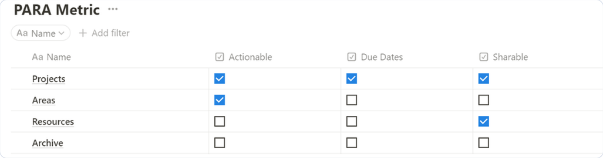
How to capture on your phone
Step-by-step walk-throughs with screenshots for iPhone + Apple Notes and Android + Google Keep.
How to capture — iPhone + Apple Notes
Step-by-step walk-through with screenshots
- Steps 1 & 2 — Set up your four PARA folders
Create the 4 folders in Apple Notes. - Ensure each folder is numbered 1 to 4 (so they always stay in PARA order).
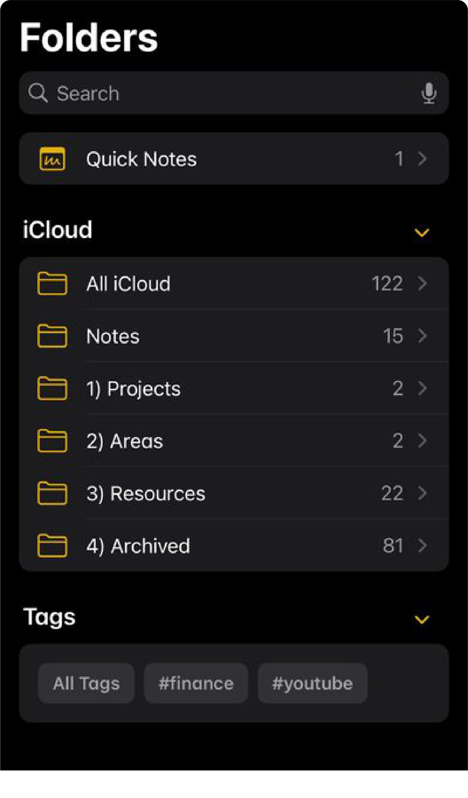
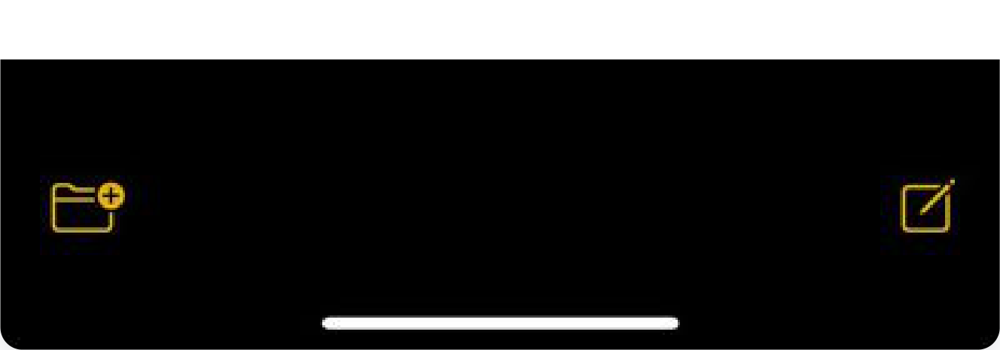
The four numbered PARA folders in Apple Notes; the new-folder icon is at the bottom-left You’ll end up with four named folders: 1) Projects, 2) Areas, 3) Resources, 4) Archived. The numbers force them to sort correctly every time you open the app.
Tap the folder icon at the bottom-left of Apple Notes to create each one.
- Steps 3 & 4 — Share to Notes from Safari
Press the Share icon on Safari (or the three-dot menu, then Share). - Choose Notes from the share sheet.
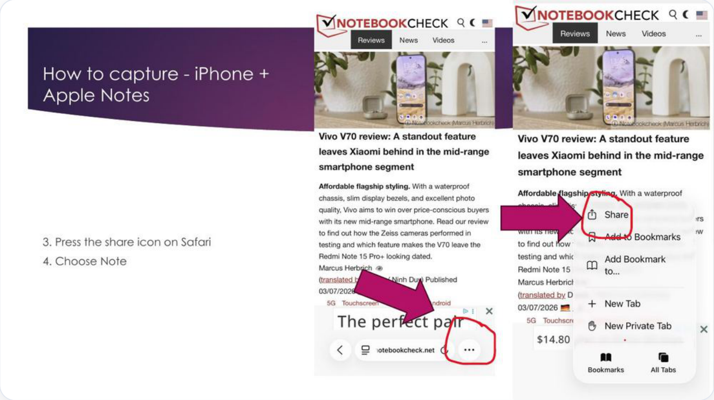
Step 3: press the share icon on Safari (via the three-dot menu) 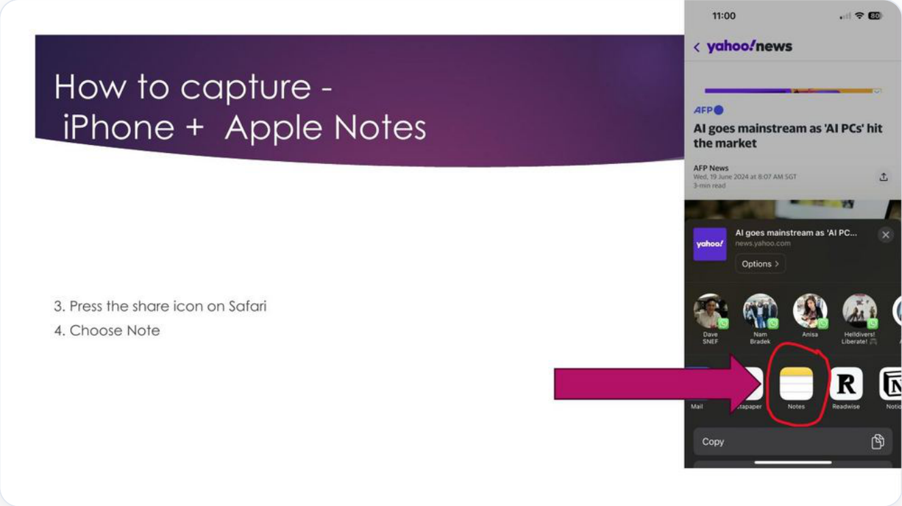
Step 4: choose Notes from the share sheet - Step 5 — Tap “New Note”
Press on New Note at the top of the share dialog to choose where the note will be saved.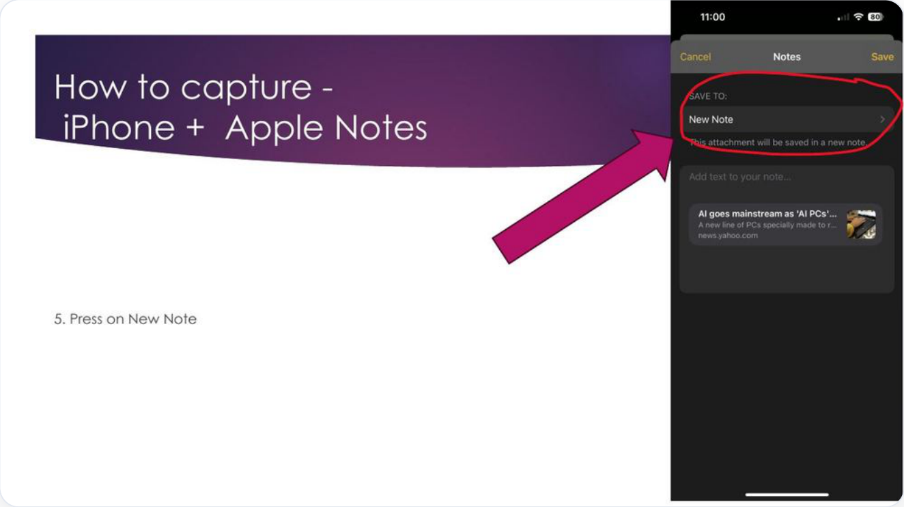
Step 5: press on New Note - Steps 6 & 7 — Pick a PARA folder and create the note
Press the PARA folder you want the new note saved into (Projects, Areas, Resources or Archive). - Press Create New Note to confirm.
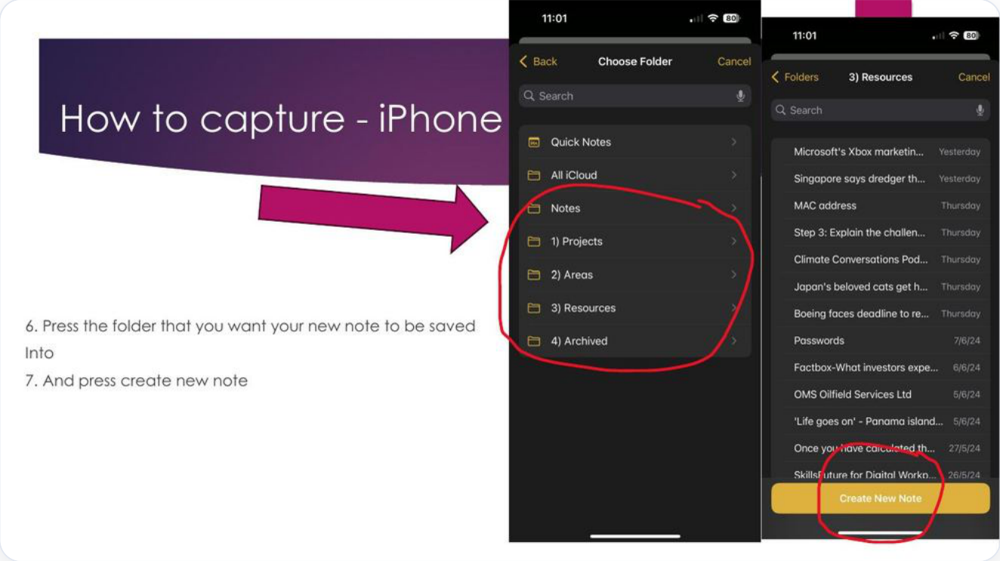
Steps 6 & 7: press the folder you want the note saved into, then press Create New Note
How to capture — Android + Google Keep
Same PARA, different app — and Archive is already built in
- Steps 1 & 2 — Create your labels
On Google Keep, create Labels for Projects, Areas, and Resources. - You don’t need to create an Archive label — Google Keep has Archive built in.
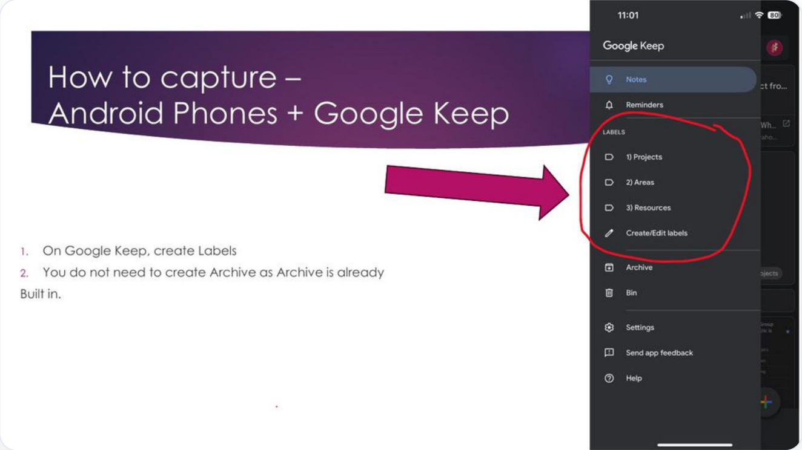
Steps 1 & 2: create labels in Google Keep; Archive is already built in - Steps 3 & 4 — Share to Google Keep
Press the Share icon on your browser. - Choose Google Keep (or Keep Notes) from the share sheet.
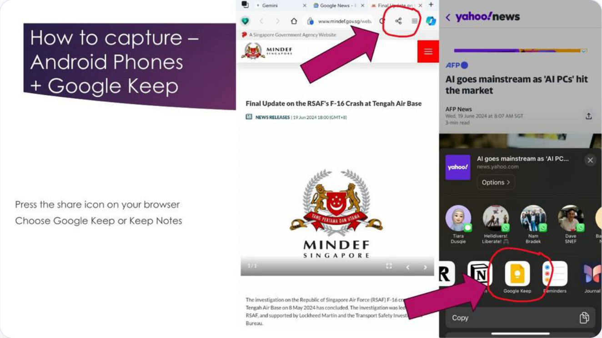
Steps 3 & 4: press the share icon on your browser, then choose Google Keep or Keep Notes - Step 5 — Add a label
Press the label icon at the bottom of the new note to change its label.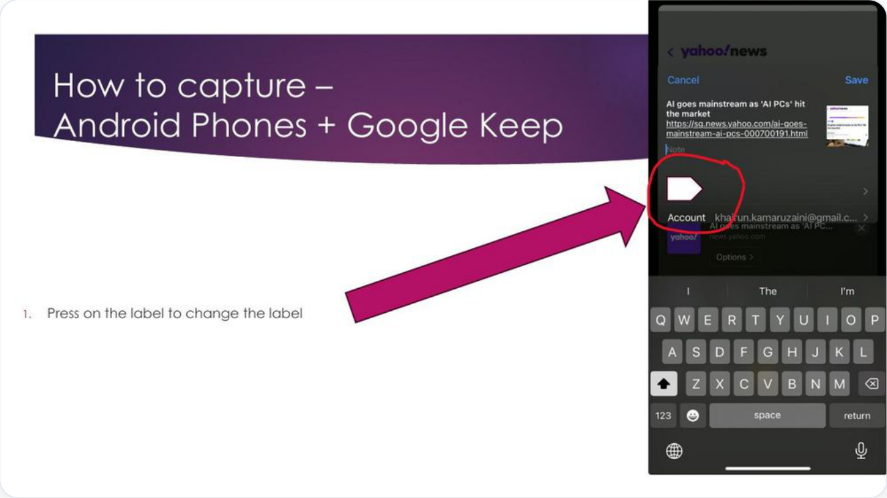
Step 5: press on the label to change the label - Step 6 — Save under your preferred label
Save the note under your preferred label: 1) Projects, 2) Areas, or 3) Resources.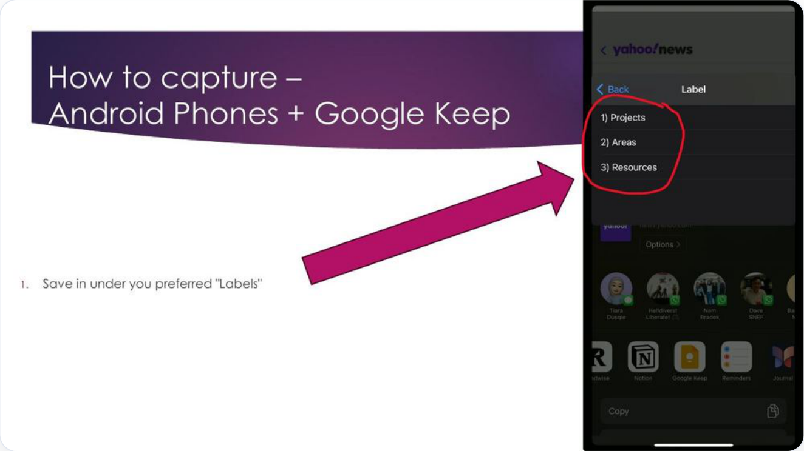
Step 6: save it under your preferred label
Distill, Express & Practise
Finish the CODE workflow, then put CODE and PARA to work.
D — Distill
Summarise your captured notes using Progressive Summarisation
What is Progressive Summarisation?
- Bold the main points and most important takeaways.
- One look at the distilled notes and you can see the most important bit.
- You can spot the gist of what the notes contain in seconds.
Worked example — before and after distilling
Here’s a typical chunk of captured text. Read it once — it’s a wall of words and nothing jumps out.
Before — captured but not distilled
Go on a day-to-night journey across River Wonders and Night Safari from now till 17 December 2026 with Secret Wild-erland, a two-park ticket that allows you to soak in the sights of wondrous animals at two wildlife parks along with digital experiences.
Now the same text, but with the meaningful phrases highlighted. One glance tells you what it’s about, when it ends, and what kind of ticket it is.
After — progressive summarisation
Go on a day-to-night journey across River Wonders and Night Safari from now till 17 December 2026 with Secret Wild-erland, a two-park ticket that allows you to soak in the sights of wondrous animals at two wildlife parks along with digital experiences.
E — Express
Turn knowledge and information into actions
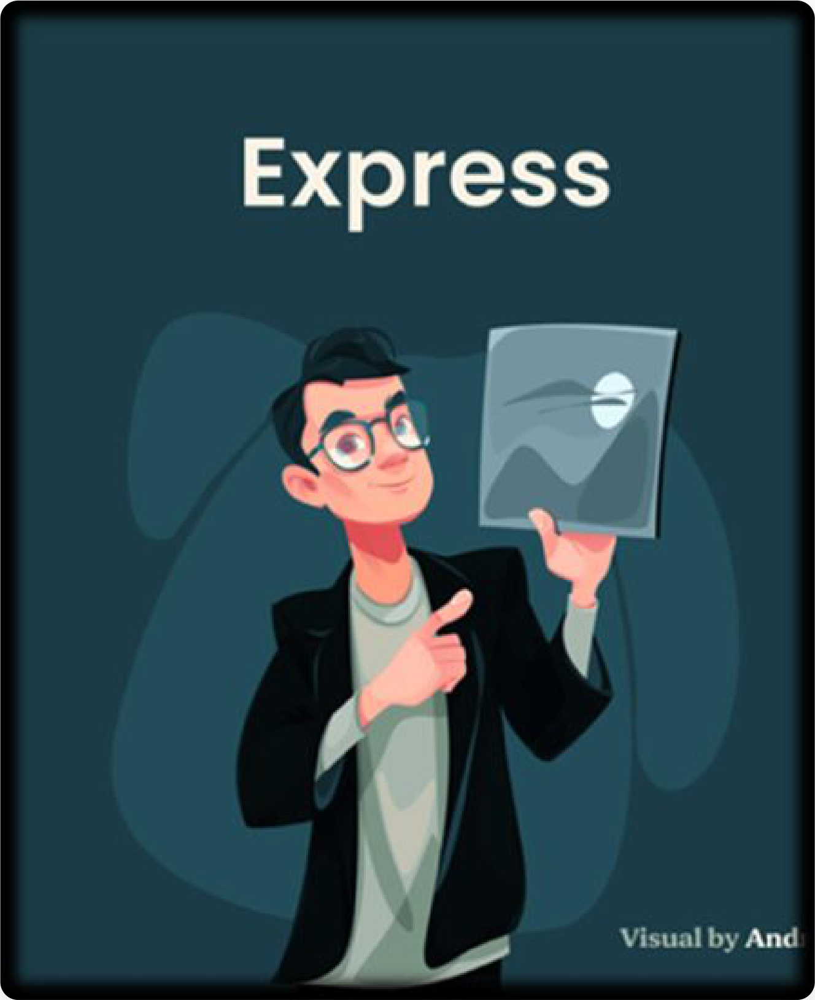
Information only has value when you do something with it
The CODE method ends in Express on purpose. A note you never act on is just digital clutter. Expressing means closing the loop — using what you captured.
Examples of Express
- Share the information in your WhatsApp group.
- Ensure that you follow up on your projects.
- Post a recipe on your social media.
- Move information to the Archive when it is completed.
- Revisit the information captured in Resources and actually use it.
Let’s Practice
Put CODE and PARA to work right now
Try the full CODE workflow
- Capture — Scan the QR code from the slide (or pick any article you’ve been meaning to read), and use the CODE method to start processing it.
- Organise — File what you captured into the right PARA folder: Projects, Areas, Resources, or Archive.
- Distill — Copy a few paragraphs from the article into your note and use Progressive Summarisation: bold the gist so future-you can scan it in seconds.
- Express — Do something with it. Share it in a WhatsApp group, add it to a project, schedule a follow-up — whatever turns the note into an outcome.
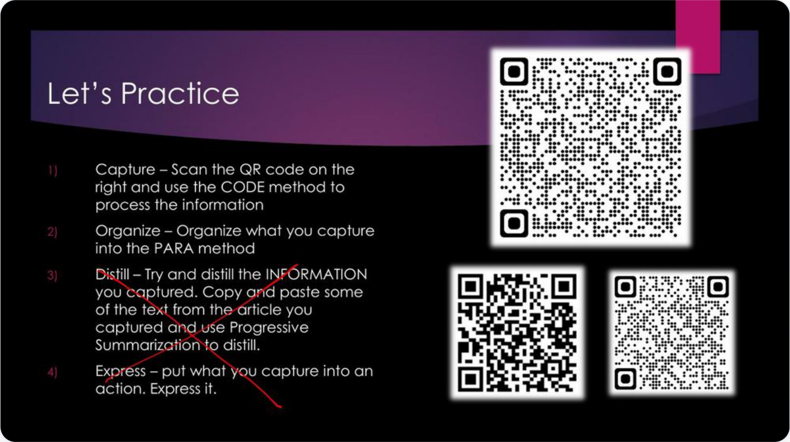
Reference guide for the Digital Note Taking module — based on Tiago Forte’s Building a Second Brain and The PARA Method.
Frameworks: CODE (Capture · Organise · Distill · Express) & PARA (Projects · Areas · Resources · Archive)
Build & Customise a Department SharePoint Site
SharePoint Site for Departments. You'll create a team site for your department, then add the four building blocks that turn a blank page into a working hub: a list, a task board, quick-link buttons, and a document library.
What you'll build today
- Create a department team site and understand how a SharePoint page is edited.
- Add a SharePoint list to track structured information (e.g. a request or asset register).
- Add a Planner / To-Do task board so the team can see who's doing what.
- Add a section of quick-link buttons to your most-used tools and pages.
- Integrate a document library right onto the home page — connected to the folder system from Topic 1.
On this page: 0 · Create the department site · 1 · Add a SharePoint list · 2 · Add a Planner task board · 3 · Add quick-link buttons · 4 · Integrate a document library
One skill unlocks all four: adding a web part
Everything below is added the same way. On your site's home page you click Edit (top-right), hover where you want the content, click the circled +, and pick a web part. Learn this once and you can add anything.
- Open your site
- Click Edit
- Click the +
- Choose a web part
- Click Republish
0 · Create the department site
Your team's home base in SharePoint · about 7 min
- Open SharePoint
Go tooffice.com(or the Microsoft 365 app launcher — the ▦ waffle, top-left) and click SharePoint. - Click “+ Create site”
You'll see it near the top of the SharePoint start page. Choose Team site — this gives your department shared files, a calendar, and a document library out of the box. - Name it after the department
e.g.Afton – Operations. SharePoint auto-creates the address and a matching Microsoft 365 group. - Add members
Add your team as Members (can edit) and keep yourself as Owner (full control). Click Finish.
https://aftonchemical.sharepoint.com/sites/Operations
| Site type | What it's for |
|---|---|
| Team site | Collaborate on files & tasks with your department. Includes a document library. ← Choose this |
| Communication site | Broadcast news & info to a wide audience. Fewer collaboration tools. |
1 · Add a SharePoint list
Track structured information — like a smart, shared spreadsheet · about 9 min
- On the home page, click Edit → + → List
Or from the command bar choose + New → List. You can start Blank, from an Excel file, or from a ready-made template. - Name the list
e.g.Equipment Register. Give it a clear description so the team knows what it's for. - Add your columns
Click + Add column and choose a data type per column — Text, Choice (for status), Date, Person, Number. Data types keep entries clean and filterable. - Enter a few rows, then save a view
Add items with + New. Filter or group by Status, then Save view as "Open items" so the team lands on the right filter. - Republish the page
Back on the home page, the list web part now shows live data. Click Republish to make it visible to everyone.
https://aftonchemical.sharepoint.com/sites/Operations/Lists/Equipment Register
Afton – Operations · Equipment Register
Command bar: + New · Edit in grid · Filter: Status · All items ▾
| Asset ID ▲ | Equipment | Location | Status | Next service | Owner |
|---|---|---|---|---|---|
AF-1042 | Viscometer | Lab A | Operational | 2026-08-14 | J. Tan |
AF-1043 | Centrifuge | Lab A | Servicing | 2026-07-22 | R. Lim |
AF-1051 | Fume Hood 3 | Lab B | Attention | 2026-07-18 | M. Ng |
AF-1067 | Spectrometer | QC Room | Operational | 2026-09-30 | S. Devi |
2 · Add a Planner / To-Do task board
See who's doing what, at a glance · about 9 min
- Edit the page → + → search "Planner"
In the web part picker, typePlannerand select the Tasks by Planner and To Do web part. - Create a new plan (or link an existing one)
Choose Create a new plan and name it — e.g.Operations – Weekly Tasks. It's automatically tied to your team. - Set up buckets
Buckets are your columns. Create To do, In progress, and Done — or use stages that fit your workflow. - Add tasks and assign people
Click + Add task, give it a title, a due date, and assign a team member. Drag tasks between buckets as work progresses. - Republish
The board is now live on the home page and stays in sync with Planner and Microsoft To Do.
https://aftonchemical.sharepoint.com/sites/Operations/SitePages/Home.aspx
Afton – Operations · Operations – Weekly Tasks · Board
Command bar: + Add task · Group by: Bucket ▾ · Filter
| To do (2) | In progress (2) | Done (2) |
|---|---|---|
| Update SDS binder for Lab B Due 18 Jul · MN | Fume Hood 3 service call Due 18 Jul · JT | ✓ 12 Jul · RL |
| Order replacement filters Due 21 Jul · RL | Draft Q3 safety report Due 30 Jul · SD | ✓ 10 Jul · MN |
3 · Add a section of quick-link buttons
One-click access to the tools your team uses daily · about 7 min
- Edit the page → + → Quick links
In the picker, choose Quick links. It drops in a labelled section you can fill with buttons. - Click + Add and paste a link
Paste a URL (an internal SharePoint page, a document, or an external site like your ERP), give it a friendly title, and pick an icon. - Choose a layout
In the web part settings (pencil ✎), pick a layout — Button, Compact, or Filmstrip. Button and Compact look cleanest for a link bar. - Reorder & republish
Drag buttons into priority order (most-used first) and click Republish.
https://aftonchemical.sharepoint.com/sites/Operations/SitePages/Home.aspx
Afton – Operations · Home
Command bar: + New · ✎ Edit
Department Quick Links
- SOP Library
- SDS / Safety Data
- ERP Dashboard
- Shift Roster
- Raise a Ticket
4 · Integrate a document library
Surface your files right on the home page · about 9 min
- Set up the library first
Open Documents and create your top-level folders using PARA + the date-first convention:Projects,Areas,Resources,Archives, with dated folders inside (e.g.2026-07-16 Afton Onboarding). - Edit the home page → + → Document library
In the picker, choose the Document library web part. - Pick which library and view to show
Select your Documents library, then choose a view (e.g. "All Documents" or a custom filtered view). You can show a specific folder as the starting point. - Set the size & command bar
In settings (✎), choose how many items to show and whether people can upload directly from the home page. Turn on the command bar so they can add files in place. - Republish
Files now live on the home page. Because folders are date-first, they stay in order automatically — the payoff from Topic 1.
https://aftonchemical.sharepoint.com/sites/Operations/Shared Documents
Afton – Operations · Documents
Command bar: + New · Upload · Sync · All Documents ▾
| Name ▲ | Modified | Modified by |
|---|---|---|
| Folder: 2026-07-16 Afton Onboarding | 16 Jul | K. Rahman |
| Folder: 2026-07-28 July Report | 28 Jul | J. Tan |
| Folder: 2026-08-02 Safety Audit | 2 Aug | M. Ng |
| Operations Handbook.docx | 10 Jul | S. Devi |
| Equipment Log.xlsx | 12 Jul | R. Lim |
| Dept Induction.pptx | 9 Jul | K. Rahman |
You've built a working department hub
| Building block | What it gives you |
|---|---|
| List | Structured, filterable tracking that beats a shared spreadsheet. |
| Planner | A shared task board synced to To Do and Teams. |
| Quick links | One-click access to the team's daily tools. |
| Library | Files on the home page, self-sorting by date. |
Tic Tech Toe Labs · Workplace Digital Skills Training
Afton Chemical · Episode 9 · SharePoint for Departments (Part 1) · 16 July 2026
SharePoint Build-A-Thon
30-Minute Team Challenge | 5 Teams × 10 Members
1. Activity Overview
Team Assignments
Each team owns ONE dedicated SharePoint page. No team touches the home page or another team's page during the activity.
| Team | Section (Page) | Deliverable |
|---|---|---|
| Team 1 | News Hub | New page with News web part + 2 sample news posts + Highlights block |
| Team 2 | Resources | New Document Library + page embedding the library + 3–5 uploaded files |
| Team 3 | Events & Calendar | New page with Events web part + 3 sample events + Featured Event card |
| Team 4 | Our People | New page with People web part + Contact section + 3-question FAQ |
| Team 5 | About Us | New page with hero banner + Mission text + image gallery + Forms embed |
30-Minute Timeline
| Time | What Happens |
|---|---|
| 0:00 – 0:05 | Facilitator briefing. Teams confirm their page name and site link. |
| 0:05 – 0:10 | Each team plans: assigns roles, drafts outline of content. |
| 0:10 – 0:25 | BUILD TIME — all 5 teams work simultaneously on their own page. |
| 0:25 – 0:30 | Each team publishes and does a 1-minute walkthrough of their page. |
2. Co-Authoring Rules — READ THIS FIRST
SharePoint does NOT work like Google Docs. Some parts of SharePoint can be edited by many people at the same time. Other parts LOCK the moment one person clicks Edit. Understanding this is the difference between a smooth activity and a frustrating one.
What CAN Be Co-Authored (Multiple People At Once)
| SharePoint Element | How Many People At Once? |
|---|---|
| Document Library — uploading files | Unlimited. Every member can upload different files simultaneously. |
| Document Library — creating folders | Unlimited, as long as they are different folders. |
| Word / Excel / PowerPoint files (in the library) | Multiple people can edit the same file at the same time (true co-authoring). |
| OneNote notebook (for content drafting) | Unlimited co-authoring. |
| Microsoft Forms (for FAQs, feedback) | Multiple people can build separate forms in parallel. |
| Different SharePoint pages | Each page can be edited by a different person at the same time. |
| Site navigation (viewing) | Everyone can browse and open the site at once. |
What CANNOT Be Co-Authored (One Person At A Time)
| SharePoint Element | Why It Locks |
|---|---|
| The SAME SharePoint page (in Edit mode) | Only 1 person can click Edit at a time. Others see 'This page is being edited by [name]' and are locked out. |
| Web parts on the same page | Adding, moving, or configuring a web part requires being the current editor of that page. |
| Page layout (sections, columns) | Only the current editor can change the page structure. |
| The Home Page (all teams share it) | Off-limits during this activity — do not touch it. |
| The top navigation menu | Only site owners can change it. Off-limits during this activity. |
| Site theme, logo, and site name | Owner-level settings. Off-limits during this activity. |
| Publishing a page | Only the person currently in Edit mode can publish. |
- Do NOT touch the home page, navigation menu, or site theme.
- Only ONE person from your team edits your page at a time. Everyone else preps content in Word, OneNote, or the library.
- Rotate the 'editor' role every ~10 minutes so multiple members get hands-on time.
3. How to Split 10 Members Within Your Team
SharePoint page editing is a 1-person-at-a-time job. To keep all 10 members busy, split into prep work (parallel) and building (rotation).
| Role | # People | What They Do | Can Work In Parallel? |
|---|---|---|---|
| Team Lead | 1 | Directs flow, decides who builds when, presents at demo | Yes |
| Builder A | 1 | First to edit the page (approx. 0:10 – 0:16) | Takes turn |
| Builder B | 1 | Second editor (approx. 0:16 – 0:22) | Takes turn |
| Builder C | 1 | Final polish + publishes page (approx. 0:22 – 0:25) | Takes turn |
| Content Writers | 3 | Draft all text in a shared Word doc or OneNote | Yes (co-author) |
| Designers | 2 | Pick images, colours, layout style; hand to Builders | Yes |
| Reviewer / Uploader | 1 | Uploads files to library, proofreads before publish | Yes |
Within-Team Workflow (Assembly Line)
| Time | Builder A | Builder B | Builder C | Everyone Else |
|---|---|---|---|---|
| 0:05 – 0:10 | Plan | Plan | Plan | Draft text / find images |
| 0:10 – 0:16 | EDITS PAGE | Prep content | Prep content | Keep writing / uploading |
| 0:16 – 0:22 | Support | EDITS PAGE | Prep | Refine text / send images |
| 0:22 – 0:25 | Support | Support | PUBLISHES | Final review |
| 0:25 – 0:30 | Present | Present | Present | Present |
4. Team Task Cards
Detailed checklist for each team. Tick off as you complete each item.
Team 1 — News Hub
Your Page: News Hub · Task Checklist:
- Create a new blank page in SharePoint named 'News Hub'
- Add a page title and short subtitle
- Add the News web part to the page
- Publish 2 sample news posts with headings and images
- Add a 'Highlights' text section at the top of the page
- Proofread all text and check images display correctly
- Publish the page
Team 2 — Resources
Your Page: Resources · Task Checklist:
- Create a new Document Library called 'Team Resources'
- Create 3 folders inside: Templates, Guides, Policies
- Upload 3–5 sample files across the folders
- Add columns/metadata (e.g., Category, Owner, Date)
- Create a new blank page named 'Resources'
- Add a Document Library web part linked to your library
- Write a short intro paragraph explaining the library
- Publish the page
Team 3 — Events & Calendar
Your Page: Events · Task Checklist:
- Create a new blank page in SharePoint named 'Events'
- Add the Events web part
- Create 3 sample events (title, date, time, location)
- Add a 'Featured Event' call-to-action card
- Add a short intro paragraph at the top
- Check event dates display correctly
- Publish the page
Team 4 — Our People
Your Page: Our People · Task Checklist:
- Create a new blank page in SharePoint named 'Our People'
- Add a page title and welcome message
- Add a People web part with 4–5 team member profiles
- Add a Contact section with email and phone
- Build a 3-question FAQ using a text/accordion layout
- Proofread names and contact details
- Publish the page
Team 5 — About Us
Your Page: About Us · Task Checklist:
- Create a new blank page in SharePoint named 'About Us'
- Add a hero banner with a title and background image
- Add an 'Our Mission' text block
- Add an Image Gallery web part with 3–4 images
- Create a short Microsoft Forms feedback form
- Embed the Forms link on the page
- Publish the page
5. Quick Reference — Do's & Don'ts
| DO | DON'T |
|---|---|
| Create your OWN new page for your section | Do NOT edit the home page or another team's page |
| Draft text and content in a shared Word doc / OneNote (co-author freely) | Do NOT have all 10 members click 'Edit' on the same SharePoint page |
| Upload files to your Document Library in parallel — all 10 members can | Do NOT change the site theme, logo, or top navigation |
| Rotate 3 Builders through the page editor role every ~6 minutes | Do NOT publish the page until your Reviewer has proofread it |
| Ask the facilitator if you're locked out of a page for more than 2 minutes | Do NOT try to force-edit a page someone else is already editing |
If You Get Stuck — Troubleshooting
- 'Page is being edited by [name]' — Wait. Only 1 editor at a time. Use the time to prep content or upload files.
- 'You don't have permission' — Raise your hand. Facilitator will fix your access.
- Changes not saving — Click 'Save as draft' or 'Republish' at the top of the page.
- Web part not appearing — Refresh the page. Some web parts take 30 seconds to load.
- Uploaded file not showing — Refresh the Document Library view.
Success criteria
- ✓ A published SharePoint page with your section's content
- ✓ All 10 members contributed something (page, text, images, or files)
- ✓ A Team Lead ready to give a 1-minute walkthrough
- ✓ Zero conflicts with other teams
Good luck, teams!